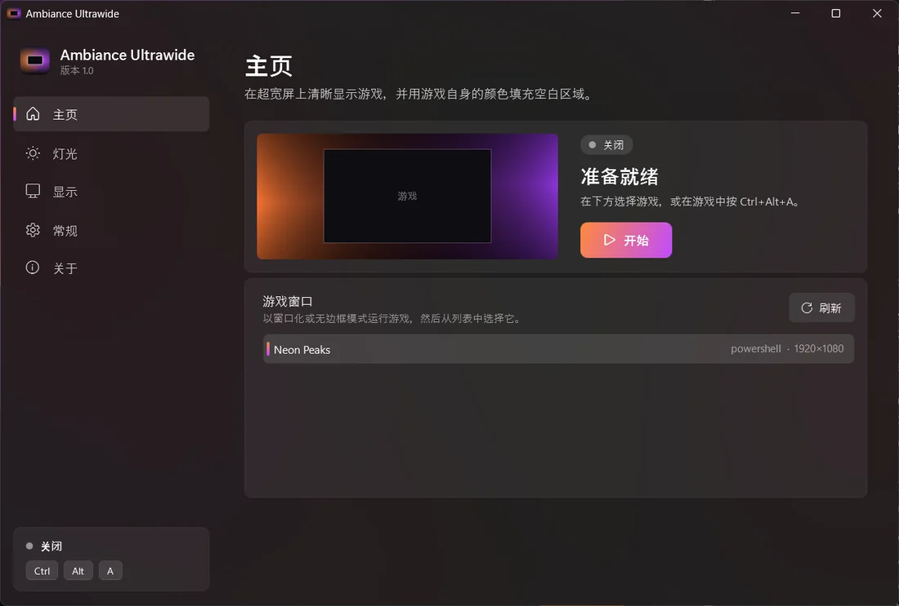
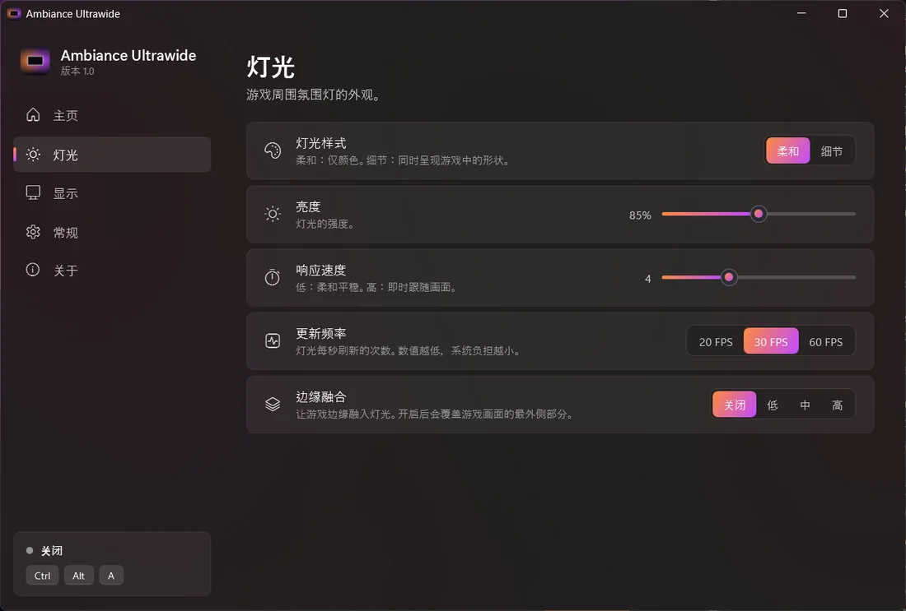

Ambiance Ultrawide
与游戏同步的氛围灯光。
为超宽屏打造、与游戏画面同步的氛围灯。用柔和的光晕填满游戏周围的黑边，就像电视的氛围灯一样。游戏保持逐像素清晰，不影响帧率。
免费 · 开源 · Windows 10/11 · 12 种语言

游戏保持清晰，空白区域被游戏自身的光照亮
告别模糊的低分辨率
左：降低 Windows 分辨率。 右：Ambiance Ultrawide。


放大至全屏，不损失帧率
游戏渲染相同的像素，由 Windows 放大显示

柔和或细节灯光
平静的色彩光晕，或呈现游戏形状的灯光

选择游戏，点击开始
或在游戏中按 Ctrl+Alt+A

按你的喜好调整灯光
样式、亮度、响应速度和更新频率

功能
显卡捕获，CPU 约 1%。从不访问游戏内存。
- 与游戏场景同步的氛围灯光
- 清晰画面，没有降低分辨率带来的模糊
- 去掉窗口边框，调整大小并居中
- 放大至全屏，不影响帧率
- 显卡捕获，CPU 占用约 1%
- 柔和与细节两种灯光样式
- 亮度、响应速度和更新频率设置
- 不访问游戏内存，不收集数据
简介
把超宽屏上的黑边变成与游戏同步的氛围灯光。
在 21:9 或 32:9 显示器上玩 16:9 游戏时，两侧会留下黑边。Ambiance Ultrawide 用随游戏场景同步变化的柔和光晕填满这些区域，就像现代电视的氛围灯一样。爆炸、日落和霓虹灯光溢出游戏边缘，整个屏幕都融入游戏之中。
两种灯光样式：柔和（平静的色彩光晕）和细节（跟随游戏中的形状）。亮度、响应速度和更新频率均可调节。
清晰而不模糊：降低 Windows 分辨率会让一切变得模糊。Ambiance Ultrawide 则在无边框窗口中逐像素居中显示游戏。如有需要，还能借助 Windows 放大镜把游戏放大到全屏，不影响帧率。
轻量不占资源：通过显卡捕获画面，CPU 占用约 1%。它从不访问游戏的内存或文件，只读取屏幕上显示的内容。不收集任何数据，也不联网。
使用方法：以窗口化或无边框模式运行游戏，在 Ambiance Ultrawide 中选择它并点击“开始”。也可以在游戏中按 Ctrl+Alt+A。Ctrl+Alt+Z 可切换放大。
免费且开源。界面支持 12 种语言。